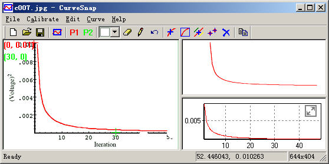
This tutorial is really simple. You can ignore it and use the program directly.
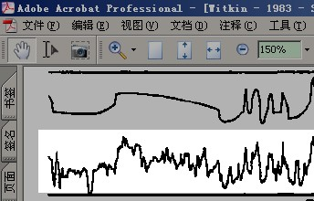
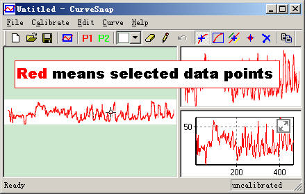
Note that the curve is not calibrated yet. So the pixel coordinate is used.
CurveSnap uses two points to calibrate the axis. The two points must not be close to each other horizontally or vertically. The picture below is actually from V1.0, while current version V1.1 is slightly different, with a magnified window to adjust the point.
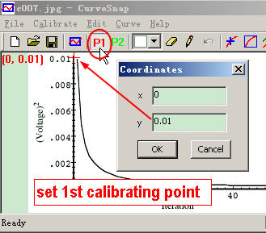
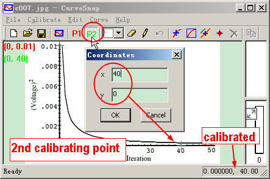
When both points are set, the status bar shows the calibrated coordinates under the cursor.
To use the tool Choose by connectivity, the data curve must not connected to axis, labels, grids, other curves, etc.
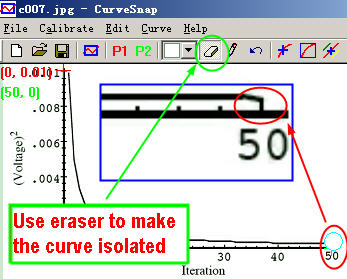
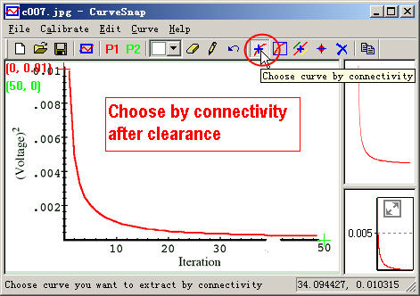
If the desired data curve is colored, then Choose by Color is recommended.
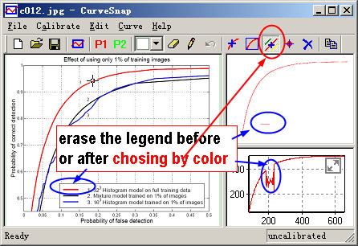
Note that the legend have the same color of curve, erase them.
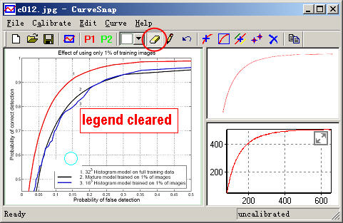
CurveSnap extracts data from pixel, which is digitized. The output data may look step-like if you export all of the data points. So it’s recommended to increase the interval in this case.
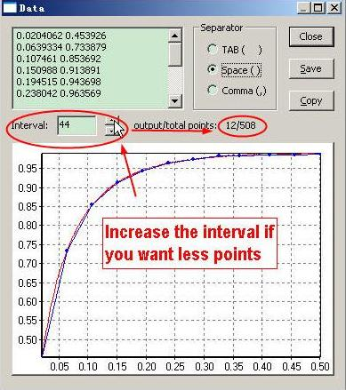
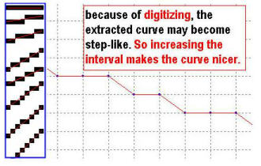
The Linear Spaced settings of X Ticks is for users who want to customize the x coordinates, which
can be interpolated from the original calibrated pixel data.
Output Precision. When fixed is off, the input represents the decimal precision. For example,
pi is 3.14 under 3, 3.1416 under 5. Set to 0 to output all the digits(default).
When fixed is on, the input represents the number of digits following the decimal point,
and pi is 3 under 0, 3.14 under 2. Another example, setting fixed on and input 0 results in integer
outputs.
For c++ programmers, the above is straightforward, just about std::setprecision and
std::fixed.
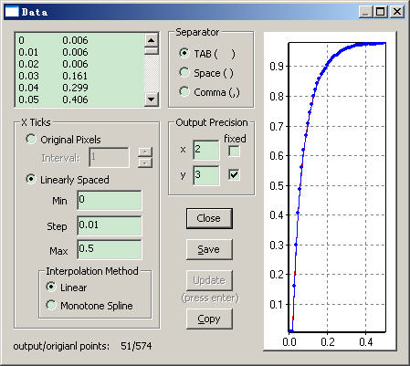